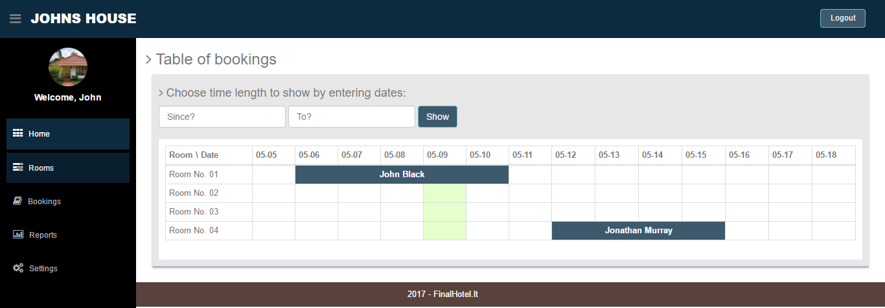
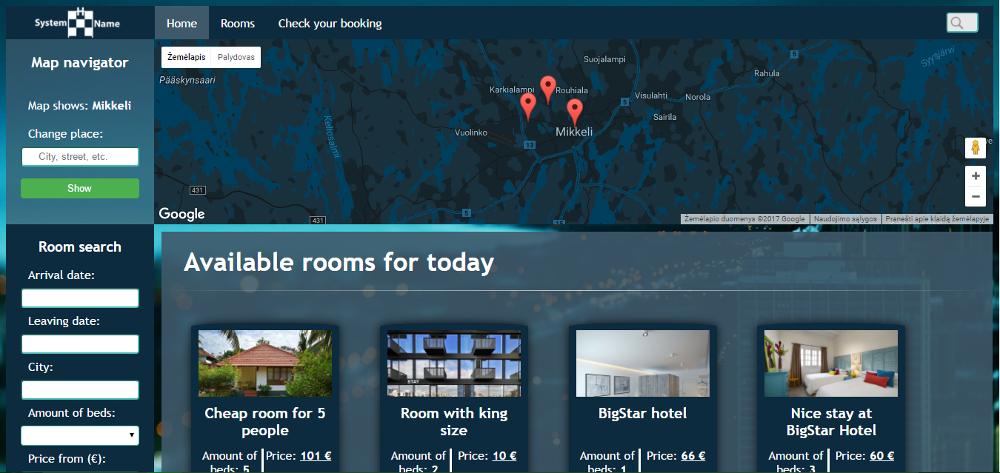
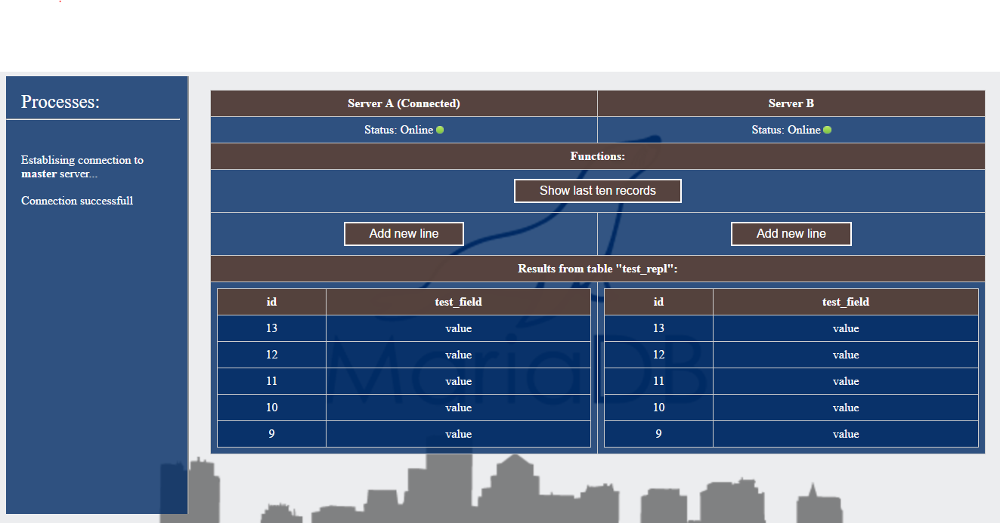
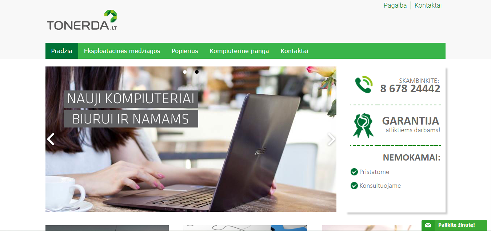

ATLIKTŲ DARBŲ SĄRAŠAS
Giedrius Šilys
Žemiau yra pateiktas mano kurtų tinklalapių sąrašas.

Trumpalaikio apgyvendinimo verslo
valdymo informacinė sistema

Trumpalaikio apgyvendinimo įstaigų
paieškos svetainė

MariaDB replikacijos stebėjimo
ir testavimo sistema

Įmonės Tonerda.LT svetainė